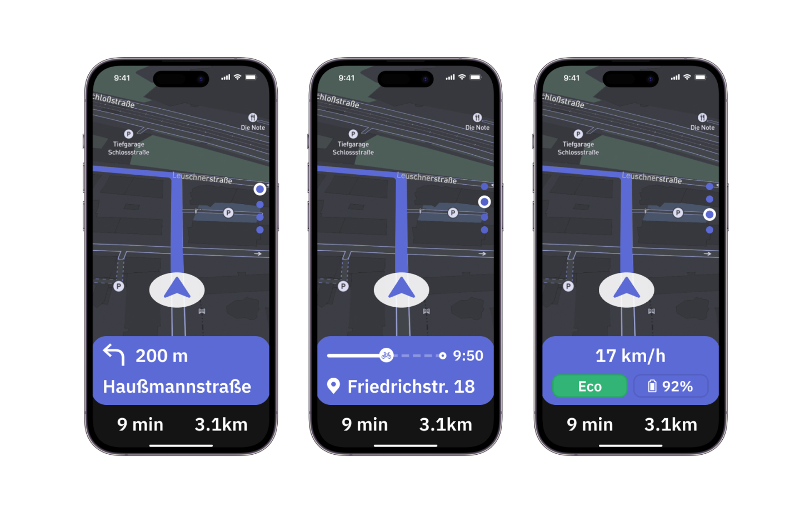

design process
Prototyping Phase
testo gallery
Testing our prototype with experienced delivery riders provided essential feedbacks on the button placements, LED signals, and navigation screens.


Back to top
Lumos is an integrated e-bike handlebar system designed to help bike couriers interact seamlessly with their navigation app without diverting attention from the road, by integrating safety features and leveraging the use of smart devices.
Mark Eisele, Anastasia Lorenz, Louise Tritschler
UX researcher, Interaction designer, Protopie, Arduino
During the ride the app offers four views, which can easily switched between them using handlebar buttons, minimizing distractions during their shift.
LED rings provide lock status, navigation guidance, and safety alerts, enhancing rider awareness and confidence.
Securely locks/unlocks the bike using a mounted phone with ultra-wideband technology and inductive charging.
testo gallery
Through our extensive research, we have gained a deep and comprehensive understanding of the needs and challenges faced by delivery riders, allowing us to better address their concerns and enhance their overall experience.
of freelancer delivery riders have experienced a vehicle collision at least once, while 11% report having sustained or provoked injuries.
of freelance riders admit to being distracted by their phones while on the job
Before generating ideas, we extracted insights from our journey and user flow mappings to identify additional delivery challenges.
After analyzing competitors in the e-bike industry, we created initial sketches exploring ideas for an integrated phone holder, app navigation, and LED indicators.
testo gallery
The bike features advanced technologies, including a wireless module with GPS, eSIM, Bluetooth, and an ultra-wideband chip for secure phone-based locking and real-time location sharing. Inductive charging keeps the phone powered during shifts.


Safety and usability are enhanced by a rear-facing camera activated by a textured button for live views, while LED signals on the handlebar provide lock status, navigation guidance, and blind spot alerts. Intuitive buttons facilitate safe navigation through app views and bike modes, optimizing efficiency and rider focus.
In Hand Mode, available when the phone is not mounted, riders can access essential pre-ride information, including bike location, battery status, weather, schedule, and earnings. This mode ensures efficient shift preparation
Once the phone is mounted, the app transitions to Bike Mode, tailored for in-ride use. This mode delivers ride-specific data, ensuring seamless integration with the bike's navigation and safety features, all controlled via handlebar buttons for a distraction-free experience.